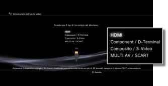
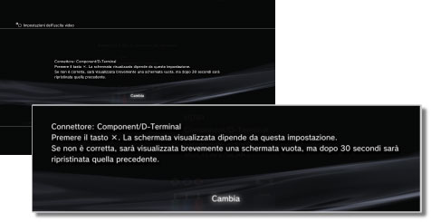
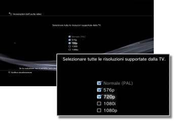
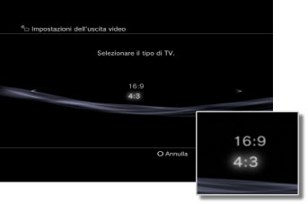
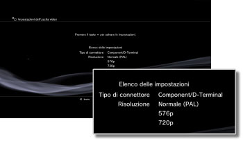

Impostazioni dell'uscita video
È possibile regolare le impostazioni dell'uscita video del sistema. Selezionare le impostazioni di uscita migliori per il televisore utilizzato.
1. |
Controllare la risoluzione supportata dal proprio televisore.
La risoluzione (modalità video) varia a seconda del tipo di televisore. Per ulteriori informazioni, consultare le istruzioni per l'uso in dotazione con il televisore.
|
2. |
Selezionare  (Impostazioni) > (Impostazioni) >  (Impostazioni di visualizzazione). (Impostazioni di visualizzazione).
|
3. |
Selezionare [Impostazioni dell'uscita video].
|
4. |
Selezionare il tipo di connettore sul televisore.
La risoluzione (modalità video) varia a seconda del tipo di connettore utilizzato.

| *1 |
Le opzioni di modalità video variano in base alla regione in cui il sistema PS3™ è stato acquistato. In Nord America, Asia e altre regioni NTSC, la modalità video 480i viene visualizzata come [Normale (NTSC)]. In Europa e altre regioni PAL, la modalità video 576i viene visualizzata come [Normale (PAL)]. Per ulteriori informazioni, consultare le istruzioni per l'uso in dotazione con il prodotto.
|
| *2 |
Il connettore D-terminal viene utilizzato prevalentemente in Giappone. Le risoluzioni supportate da D1 a D5 sono le seguenti:
D5: 1080p / 720p / 1080i / 480p / 480i
D4: 1080i / 720p / 480p / 480i
D3: 1080i / 480p / 480i
D2: 480p / 480i
D1: 480i
|
| *3 |
S VIDEO è un formato utilizzato prevalentemente in Giappone.
|
| *4 |
La presa per connettore Euro-AV è prevista solo per i sistemi PS3™ venduti in Europa.
|
| *5 |
AV MULTI è un formato utilizzato prevalentemente in Giappone. Se si seleziona [AV MULTI / SCART], viene visualizzata la schermata che consente di selezionare il tipo di segnale di uscita da visualizzare.
|
| *6 |
SCART è un formato utilizzato prevalentemente in Europa. Se si seleziona [AV MULTI / SCART], viene visualizzata la schermata che consente di selezionare il tipo di segnale di uscita da visualizzare.
|
|
5. |
Impostare il formato di visualizzazione 3D sul televisore.
Impostare il sistema affinché corrisponda al formato dello schermo del televisore in uso.
Questa schermata non sarà visualizzata se il televisore in uso non è di tipo 3D o se non è stato scelto [HDMI] nel punto 4.
|
6. |
Cambiare le impostazioni dell'uscita video.
Cambiare la risoluzione dell'uscita video. In base al tipo di connettore selezionato nel punto 4 è possibile che questa schermata non venga visualizzata.

|
7. |
Impostare la risoluzione.
Selezionare tutte le risoluzioni supportate dal televisore in uso. Il video viene trasmesso automaticamente alla massima risoluzione possibile per il contenuto in fase di riproduzione.*
* La risoluzione video viene selezionata con il seguente ordine di priorità: 1080p > 1080i > 720p > 480p/576p > Standard (NTSC: 480i/PAL: 576i).
Se nel punto 4 viene selezionato [Composito / S-Video], la schermata di selezione della risoluzione non viene visualizzata.
Se è selezionato [HDMI] è inoltre possibile regolare automaticamente la risoluzione (il dispositivo HDMI deve essere acceso). In questo caso non viene visualizzata la schermata per la selezione delle risoluzioni.

|
8. |
Impostare il tipo di televisore.
Selezionare il tipo di televisore in uso. Effettuare l'impostazione quando deve essere attiva solo la risoluzione SD (NTSC: 480p/480i, PAL: 576p/576i), ad esempio quando nel punto 4 è selezionato [Composito / S-Video] o [AV MULTI / SCART].

|
9. |
Controllare le impostazioni.
Verificare che l'immagine visualizzata presenti la risoluzione corretta per il televisore. Premere il tasto  per tornare alla schermata precedente e rivedere le impostazioni. per tornare alla schermata precedente e rivedere le impostazioni.

|
10. |
Salvare le impostazioni.
Le impostazioni dell'uscita video vengono salvate nel sistema PS3™. È possibile continuare a configurare le impostazioni dell'uscita audio. Per i dettagli sull'uscita audio vedere (Impostazioni) >  (Impostazioni dell'audio) > [Audio Output Settings] in questa guida. (Impostazioni dell'audio) > [Audio Output Settings] in questa guida.
|
Note
- Se le impostazioni dell'uscita video non corrispondono a quelle richieste per il televisore utilizzato, è possibile che sullo schermo non compaia nulla quando si modifica la risoluzione. Tuttavia, lo schermo deve tornare automaticamente alla risoluzione originale dopo un determinato periodo di tempo. Se sullo schermo non compare nulla per oltre 30 secondi, spegnere il sistema. Quindi premere per almeno cinque secondi il tasto di accensione sulla parte anteriore del sistema per riaccendere il sistema. Per le impostazioni dell'uscita video verrà ripristinata automaticamente la risoluzione normale.
- Se un dispositivo che non è compatibile con lo standard HDCP (High-bandwidth Digital Content Protection) viene collegato al sistema utilizzando un cavo HDMI, non è possibile emettere video e/o audio dal sistema.
- Il contenuto protetto da copyright su Blu-ray Disc può essere trasmesso soltanto a 1080p se si utilizza un cavo HDMI collegato a un dispositivo compatibile con lo standard HDCP.
- Quando il sistema PS3™ (serie CECH-3000 / 4000) è collegato a un televisore mediante un cavo D-terminal, un cavo Component AV o un cavo AV Multi (un prodotto Sony Corporation), l'uscita analogica ad alta definizione è soggetta a restrizioni al fine di conformarsi alla tecnologia di protezione del copyright utilizzata dai Blu-ray™ (AACS (Advanced Access Content System)). Il software video BD (BD-ROM) e i BD registrati con contenuto video protetto da copyright (come i programmi trasmessi) sono riprodotti a 480i.
- Collegare il sistema (serie CECH-4200 o successivo) mediante un cavo HDMI per la riproduzione di software video BD (BD-ROM) e BD registrati con contenuto video protetto da copyright.